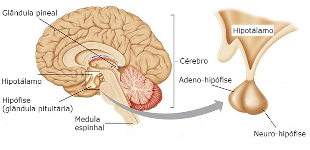
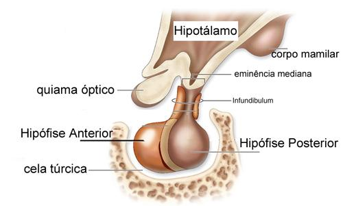
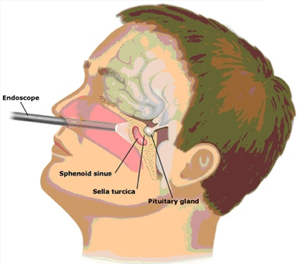
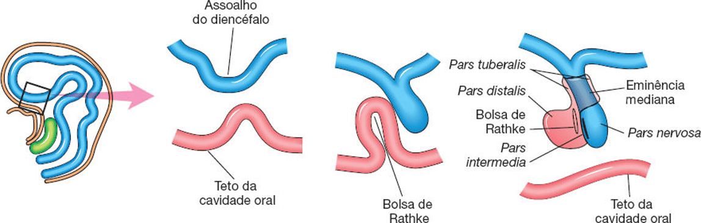
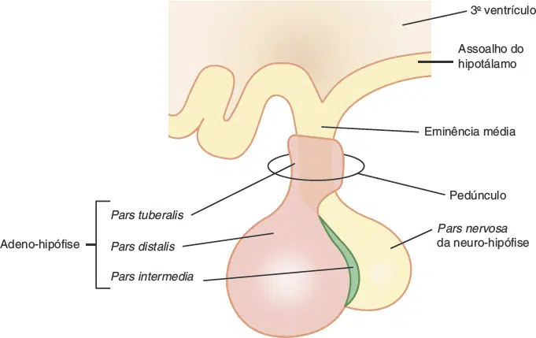
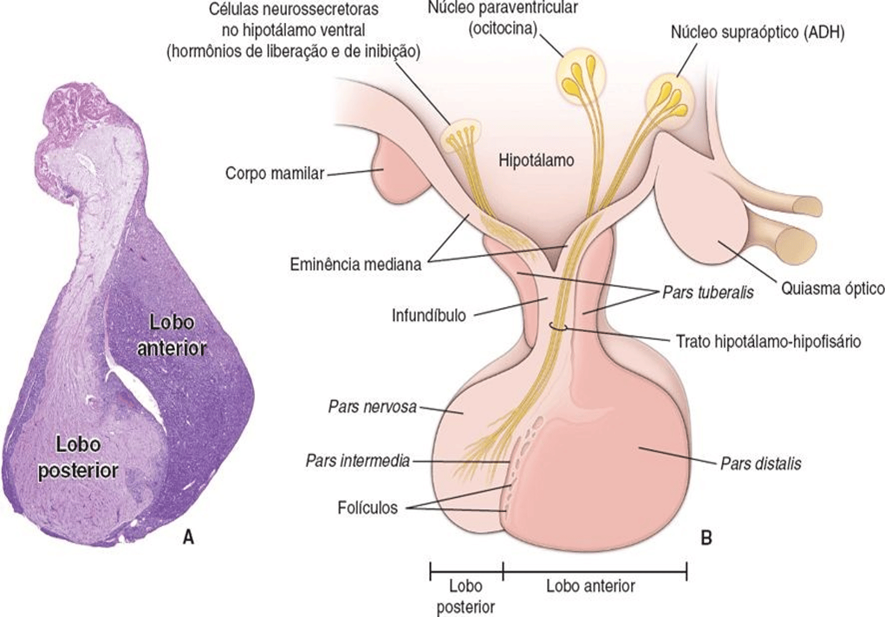
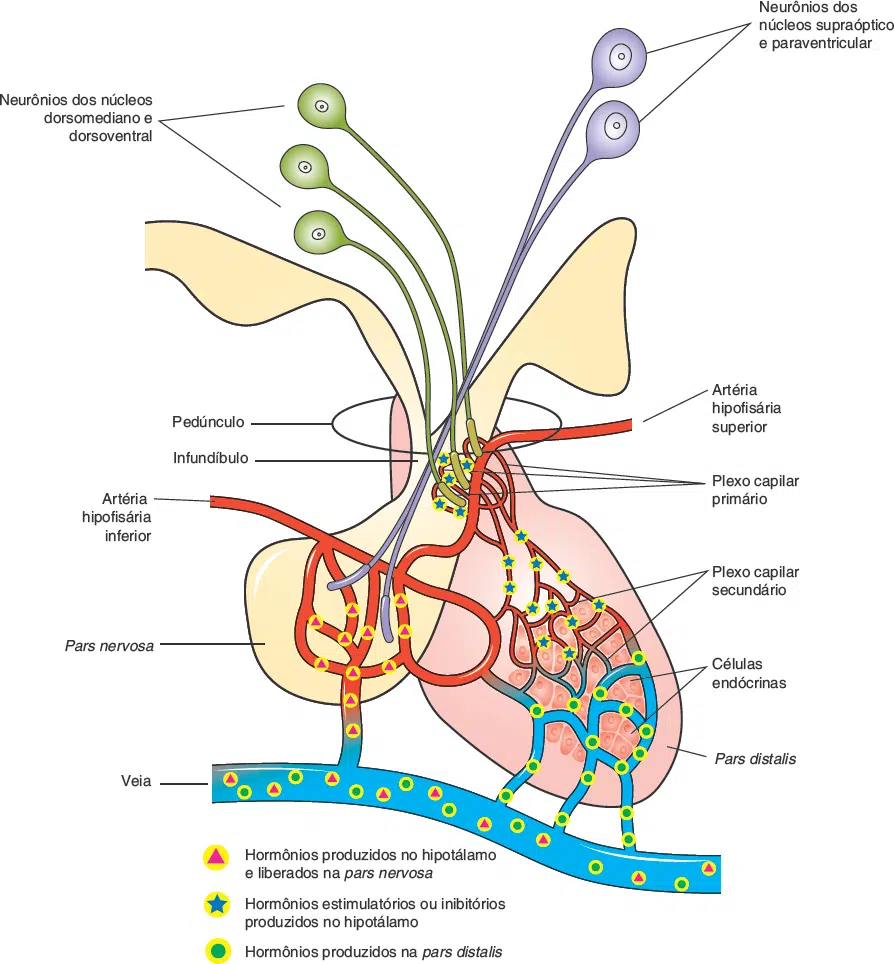
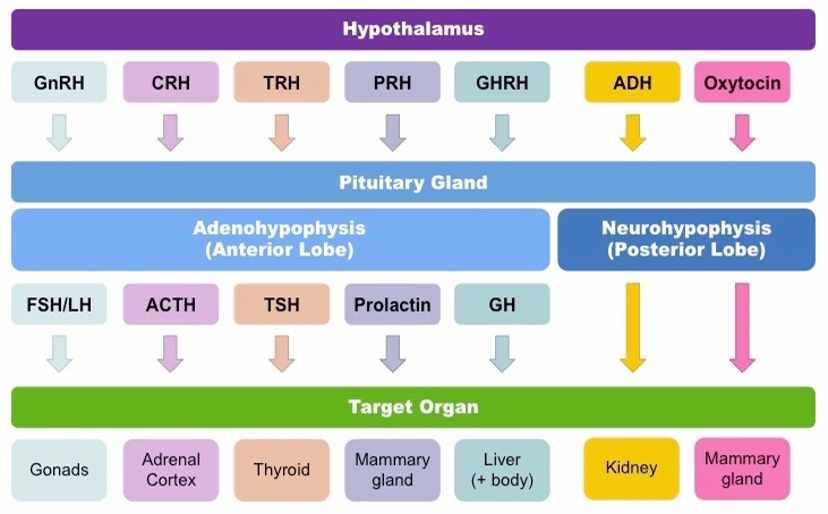
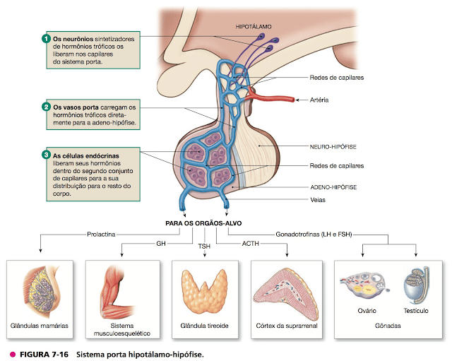
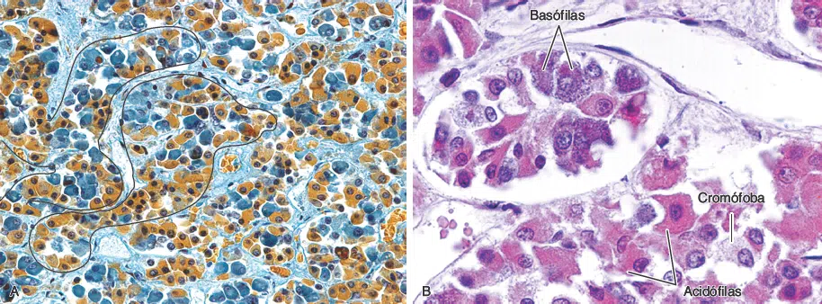

A glândula hipófise, chamada antigamente de glândula pituitária (do latim, Pituita = secreção mucosa), está localizada na fossa hipofisiária / sela turca (uma formação do osso esfenoide), na fossa média do crânio.
Galeno acreditava que a secreção nasal era proveniente do encéfalo, atribuindo o nome de pituitária. Somente no século XVII que verificaram que a hipófise não está relacionada com a secreção nasal.
O termo hipófise significa hipo = abaixo; fise = crescimento, o nome foi atribuído a glândula por se desenvolver (crescer) abaixo do encéfalo.
Pode ser dividida em duas partes: neuro-hipófise (parte posterior da glândula) e a adeno-hipófise (parte anterior da glândula) entre elas há uma pequena porção denominada de parte intermédia (atrofiada no ser humano, contudo em outras espécies apresenta funções relevantes).
Inferiormente a hipófise podemos localizar o seio esfenoidal do osso esfenóide, que forma parte do teto da cavidade nasal, assim, o acesso cirúrgico minimamente invasivo da hipófise é por meio da cavidade nasal, atravessando o seio esfenoidal e acessando a hipófise inferiormente (acesso transesfenoidal).
Na região ântero-superior da hipófise podemos localizar o quiasma óptico (uma formação do hipotálamo) que contém o cruzamento das fibras nasais da retina de cada olho (as fibras nasais de cada retina captam informações visuais do campo temporal).
Em torno da hipófise podemos observar o seio cavernoso (um plexo venoso) e lateralmente a hipófise as artérias carótidas internas.
A glândula hipófise é uma estrutura ovóide (cerca de 12 mm de diâmetro transversal e 8 mm de diâmetro anteroposterior, e com um peso médio de 500 mg no adulto), é contínua com o infundíbulo, um prolongamento inferior oco, de formato cônico, derivado do túber cinéreo do hipotálamo.



A hipófise está localizada no centro da sela turca (região denominada de fossa hipofisiária), separada do restante do encéfalo por uma prega, de formato circular, derivada da dura-máter.
Podemos dividir a hipófise em duas partes:


Na primeira imagem do lado esquerdo observe a linha em laranja esquematizando o ectoderma e a linha em azul o tubo neural.
Em seguida, o assoalho do diencéfalo se desloca inferiormente, enquanto o teto da cavidade oral primitiva se projeta superiormente.
O ectoderma forma a bolsa de Rathke com sua parede anterior se dilatando (diminuindo o tamanho da cavidade – observe o espaço diminuto da bolsa de Rathke na figura do lado direito).
A neuro-hipófise e a adeno-hipófise são separadas por uma pequena fissura (resquício da bolsa de Rathke).

Na figura acima, vemos: corte sagital do encéfalo com foco na região hipotálamo-hipofisária. Identifique a eminência mediana, na região proximal do infundíbulo.
Na eminência mediana neurônios parvocelulares liberam hormônios que influenciam a secreção de outros hormônios da adeno-hipófise.
Os corpos celulares agrupados no sistema nervoso formam núcleos. No hipotálamo os núcleos supraóptico e paraventricular (magnocelulares), projetam seus axônios em direção a neurohipófise. Os axônios partem dos núcleos e alcançam a neuro-hipófise atravessando o infundíbulo.
Na região da neuro-hipófise há a formação de uma rede capilar proveniente da artéria hipofisária inferior, desta forma, os hormônios produzidos no hipotálamo são secretados pela neurohipófise na rede capilar.

As artérias da hipófise originam-se das artérias carótidas internas, são elas: artérias hipofisárias inferiores e superiores.
A artéria hipofisária inferior circunda e entra na neuro-hipófise para suprir seu leito capilar, recebendo os hormônios secretados: ADH e ocitocina.
As artérias hipofisárias superiores suprem a eminência mediana do túber cinério, a parte superior do infundíbulo.
Nessa região formam o plexo capilar primário (que recebe os hormônios liberadores dos neurônios parvocelulares do hipotálamo).
Esse plexo capilar primário é drenado pelas veias porta-hipofisários, em direção ao plexo capilar secundário, que está localizado em torno da adeno-hipófise, desta forma, os hormônios liberadores do hipotálamo alcançam os trofos da parte distal da hipófise, controlando sua secreção.
Os hormônios do hipotálamo são secretados na corrente sanguínea de acordo com a presença de hormônios liberadores (releasing) ou inibidores.
São eles:
GHRH (hormônio liberador de hormônio do crescimento);
GHIH (Hormônio inibidor do GH);
TRH (hormônio liberador de tireotrofina);
CRH (hormônio liberador de corticotrofina);
GnRH (hormônio liberador de gonadotrofina);
PRH (Hormônio estimulador da prolactina);
PIH (Hormônio inibidor da prolactina).

Esses hormônios são liberados pelos neurônios parvicelulares do hipotálamo (principalmente provenientes do núcleo arqueado).
A liberação desses hormônios é feita no plexo capilar primário, formado pela artéria hipofisária superior (na região superior do infundíbulo).
Na corrente sanguínea, esses hormônios são transportados pelas veias porta-hipofisárias até o plexo capilar secundário, localizado na região da adeno-hipófise, desta forma, atuando sobre as células cromófilas basófilas ou acidófilas (somatotrofos, corticotrofos, tireotrofos, gonadotrofos e lactotrofos).
A adeno-hipófise é altamente vascularizada.
Ela consiste em células epiteliais de tamanho e formato variados, organizadas em cordões ou agregados irregulares, entre os quais se encontram capilares fenestrados de paredes delgadas.
A maioria dos hormônios sintetizados pela adeno-hipófise são tróficos (relacionados à ela).
São seis hormônios no total:
Os dois últimos denominados de gonadotrofinas.
A secreção dos hormônios da adeno-hipófise é regulada por ações hormonais provenientes do hipotálamo, via sistema porta-hipofisário.

As células epiteliais endócrinas, que secretam os diferentes hormônios da adeno-hipófise, são distinguidas em parte pelas suas diferentes afinidades por corantes.
Quando as células têm afinidade com o corante são denominadas de cromófilas (que podem ser acidófilas ou basófilas).
São células acidófilas:
Lactotrópica ou Mamotrópica = secretores de prolactina.
São células basófilas:
As células cromófobas são consideradas células cromófilas quiescentes ou degranuladas, ou células precursoras imaturas; elas constituem até a metade das células da adeno-hipófise.

Pars distalis da adeno-hipófise. A. Na pars distalis, as células endócrinas são organizadas em cordões ou ilhas. Dois desses cordões estão assinalados. As células acidófilas estão coradas em castanho e as basófilas, em azul. (Fotomicrografia. Tricrômico de Mallory. Pequeno aumento.) B. Alguns corantes permitem uma distinção melhor dos grãos de secreção das células cromófilas (acidófilas e basófilas) da pars distalis. Observe dois capilares sanguíneos: em cima, à esquerda, e embaixo, à direita. (Fotomicrografia. Tricrômico de Gomori. Grande aumento.)
A neuro-hipófise secreta dois hormônios produzidos pelos núcleos hipotalâmicos (supra-óptico e paraventricular):
Ocitocina e hormônio antidiurético (ADH ou vasopressina).
A vasopressina (ou hormônio antidiurético, ADH), que controla a reabsorção de água pelos rins (por inserção de canais de aquaporina no túbulo contorcido distal e ducto coletor);
E a ocitocina, que promove a contração da musculatura lisa uterina (durante o parto) e a ejeção do leite pela mama (durante a lactação).